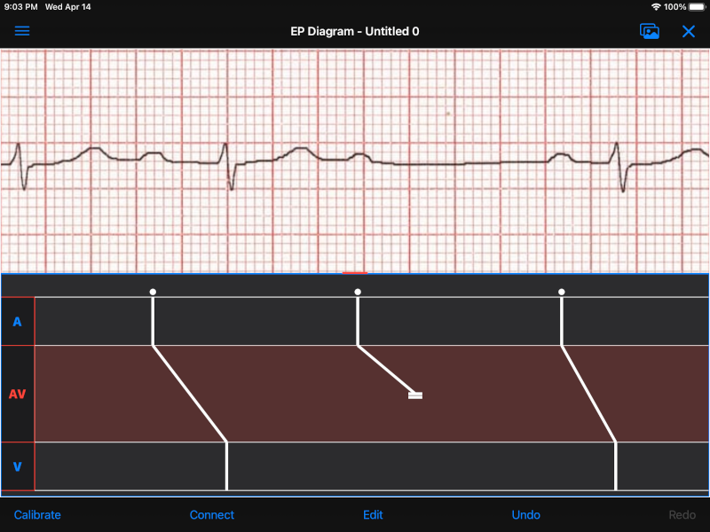

Table of Contents
- Beta version notes
- Quick start
- What are ladder diagrams?
- EP Diagram manual
- Known issues/bugs/limitations
- Next version plans
- References
- Acknowledgments
Beta version notes
EP Diagram is under active development, but this beta version is now feature complete, and the remaining development will be bug fixes and usability improvements.
New in this version
- App help (this file) is now complete.
- Improvement in undo functionality.
- Restore linking after edit mode.
- Keep symbols from appearing in left margin.
What is still missing
- Possibly adding onboarding and/or tooltips.
Instructions for beta testers
- Email me (mannd@epstudiossoftware.com) with bugs or requested features. I especially would like to know about any app crashes.
- Let me know if there are usability problems (hard to move marks, unexpected behavior, other awkwardness).
- If you have sample ECGs that could be included in the app, for example, different types of heart block, premature beats, other arrhythmias, please send them to me. Make sure they are anonymized and are not copyrighted.
- If you have ideas for default ladders to be included in the app, let me know.
- The final diagram file format will likely change with the release of the app, meaning diagram files you create with this beta version will likely not open in the app. Once the final version is released, the file format will be forwardly compatible with subsequent app versions.
- Email me at mannd@epstudiossoftware.com or send feedback directly through the TestFlight app.
- A copy of this help file is at [link]. It may be useful to read through the help file on a different device while using the app as you are learning it.
Quick start
Normal mode
- EP Diagram opens and saves diagram files, that will be stored in the files app on you iPad or iPhone.
- When you open or create a new diagram file, you will see a blank area at the top of the screen and a default ladder grid at the bottom.
- Use the "hamburger" menu icon at the top left to open the menu. You can select an image from your photos or your files and it will appear in the top of the screen.
- Tap on the image to create marks, which are the lines that you will be drawing on the ladder. Use the cursor to align the mark with the ECG waveforms. Tap away from the cursor to hide the cursor. Tap on a mark to show the cursor and each tap changes the movement point of the mark from middle to proximal to distal.
- Double click on a mark to delete it. Double click anywhere else to create a mark. Double clicking is a fast way to create marks.
- Marks appear in the active region, shown by a colored background. If you tap on a different region the marks will appear in that region and the active region will change. Tapping on the label of the region will also activate or deactivate the region.
- Dragging in a region will also create a mark.
- Long press on the cursor to change it to an omnidirectional cursor (it has a large circle on it), allowing marks to move in any direction. Long press again to change it back.
- Marks that are placed end to end will automatically link up and move together afterwards.
Calibration mode
- Press the Calibrate button to show a caliper that can be used to calibrate the diagram to a standard interval of 1000 msec.
- After calibration, measurements will appear on the diagram.
Edit mode
- Press Edit to allow taps to select marks or regions, or dragging to select zones.
- Long press after selection to show a menu that allows extensive customization of the appearance of the marks, including the style, emphasis, block, impulse origin, etc. and also allows adding a rhythm to a region or zone, e.g. atrial fibrillation.
Connect mode
- Tap pairs of marks separated by a region to connect the marks.
- Tap from a mark to an adjacent region to have a mark block in that region.
Undo/Redo
- Practically anything you do can be undone or redone and these changes are automatically saved.
Other features
- Select ladders
- Edit/create your own ladders
- Sample diagrams
Preferences
- Change the overall appearance or behavior of the app. Many aspects are customizable.
What are ladder diagrams?
Ladder diagrams date back at least a century and have been used to analyze arrhythmias and as teaching tools almost as long as there has been electrocardiography. For a history and examples of ladder diagrams, see the references. Also, I plan to write a blog post on ladder diagrams and the EP Diagram app, which I'll link here when it is available.
EP Diagram manual
Introduction
EP Diagram is a full feature ladder drawing program. It allows you not only to draw ladders, but customize their appearance to a fine degree. As such it is a complex program and it can take a while to learn all its features. However, it has an extensive Undo/Redo facility, so feel free to experiment.
Don't panic! (Undo, Redo, and Autosave)
Practically any change you make while using this app can be reversed by tapping the Undo button at the bottom of the screen. If you change your mind you can revert the undo action by tapping the Redo button. Every change you make is automatically saved.
Terminology
| Term | Definition |
|---|---|
| Diagram | a file containing an image and a ladder |
| Ladder | a graphical representation of electrical conduction |
| Region | an anatomic area of the heart, e.g. atrium or ventricle |
| Zone | a subset of a region |
| Label | the area of a region containing its name, e.g. A or V |
| Mark | the lines in each region representing conduction |
| Cursor | a line connected to a mark used to move and align the mark |
| Anchor | the point on the mark where movement occurs, indicated by the cursor |
| Link | a connection between marks causing them to move together |
| Impulse origin | where conduction starts, indicated by a symbol |
| Block | where conduction blocks, indicated by a symbol |
| Interval | time in msec between adjacent marks, aka cycle length |
| Conduction time | time in msec between earliest and latest points of a mark |
| Caliper | used to calibrate the diagram to allow measurements |
| Conduction direction | optional arrow symbol indicating direction of electrical flow |
| Markers | optional lines on image aligned with marks |
Diagrams
Creating and opening diagrams
EP Diagram is a document-based app, meaning the diagrams you create are stored on your device and on iCloud, and can be handled by the Files app on your device, meaning you can copy them, rename them, or delete them outside of the EP Diagram app. The diagram files you create have a file extension of diagram and a specific icon and file format. When you open the app, a screen showing your diagram files and a create file icon.

Figure 1: EP Diagram files
Tap Create New Diagram to create a diagram file, or tap on one of your previously created diagrams to open it.
Renaming a diagram
New diagrams have a generic file name. You can rename the diagram in the Files app, or rename using the side menu [link] and then choosing Rename diagram.
Initial diagram screen

Figure 2: New diagram
A blank diagram has no ECG image and has a default ladder without marks. You will see how to add an ECG image and annotate the ladder in the next sections.
Closing a diagram
There is no need to specifically save changes you make to a diagram. Every change you make is automatically saved. You close a diagram by simply tapping the X at the upper right hand corner of the screen. When you reopen the diagram it will appear like it did when it was last closed. Not however that undo and redo information is not restored when you close and reopen a diagram. Undo information can also be reset by the operating system if memory resources are low. Thus if you have a diagram that you want to "play around with" but don't want to lose its original form, it might be best to duplicate that diagram using the Files app, and work on a copy.
Images
Adding an image
- Image types
EP Diagram supports most image formats, such as jpg, png, and also can load PDF files. In addition you can take an photo with your device's camera and directly import it into the app.
- Selecting images
Open the side menu and tap Take photo to use your camera to create an image, or tap Select image and choose Photos or Files as the image source. If a dialog appears asking for permission to access the camera or your Photos app, go ahead and grant permission. If you don't, you will need to grant this permission in the Settings app of your device in order to import images. After selecting an image, it will appear in the top half of your diagram.

Figure 3: Diagram with image added
Manipulating the image
- Scrolling and zooming
You can pinch to zoom and use your finger to scroll the image. If you have created a ladder, you will see the ladder will zoom and scroll appropriately at the same time. In fact, in EP Diagram all zooming and scrolling is down via the image, not via the ladder.
- Rotating the image
If the image is out of kilter (this may especially happen with photos you take), long press on the image and then select in the menu that appears Rotate.

Figure 4: Image menu
Use the buttons at the bottom of the screen to rotate the image. Tap Reset to bring the image back to its original orientation.

Figure 5: Rotate menu
- Device rotation
You can rotate the device itself and the screen will automatically adjust.
- Adjust the size of the image versus the ladder
There is a small red horizontal bar between the image and the ladder. Move this up or down to adjust the relative proportions of the image and the ladder on the screen.
Ladders
Default ladder
When you create a new diagram, a default ladder is presented initially. You can change the default ladder (see [link]), but the original default ladder has three regions: A (atrial), AV (atrioventricular), and V (ventricular). Notice that the AV region is larger than the other two. This is something you can change [link]; in fact you can create your own ladders from scratch [link]. You can also edit the text of the labels on the left hand side, add or remove regions, and adjust the width of the labels. All this will be discussed later. For now we'll just use this ladder as is and start to create some marks.
Modes
Most of the time you will be working with the ladder in normal mode. This mode allows you to add and delete marks, move marks, link marks together, and in general draw your ladder. The toolbar menu at the bottom of the screen in normal mode shows the three other modes: calibrate, edit, and connect. Those modes are used to calibrate the diagram to allow measurements to be made, to edit the ladder, and to connect quickly pairs of marks. These modes will be discussed in detail later.
Active region
In normal mode frequently one of the ladder regions is highlighted, as seen below. This is the active region.

Figure 6: The active region is highlighted
You can change the active region by tapping on the label of another region, or toggle it on and off by tapping of the label of the active region. The active region determines into which region a mark is drawn, when tapping on the image as described next.
Marks
Creating marks
If you tap once on the image, a vertical mark with an attached cursor will be drawn in the active region. If there is no active region, the first region in the ladder will become the active region. If instead of tapping on the image you tap on the ladder, whatever region you tap on will become the active region, and the mark will appear in that region.
Once the mark appears with the cursor, if you single tap elsewhere, the cursor will disappear. Tap again elsewhere on the image to create another mark. In the figure below we are adding marks in the A region, corresponding to P waves, by tapping on P waves in the image.

Figure 7: Adding marks to the A region
Note that in these images tiny dots are present above each mark. These are impulse origin symbols, and they may not appear if you are working through this example yourself, as they depend on app preference settings. They will be explained later, but ignore them for now.
Shortcut for creating marks
It's a bit tiresome to click to create a mark, and then click again just to make the cursor disappear, and the click a third time to create the next mark. So, to make things easier, you can just double click at each new location to create a new mark. Here, we first clicked on the label of the V region to make it the active region, and we are double clicking on QRS complexes to make marks in the V region.
Figure 8: Adding marks in the V region
Dragging to create marks
As described later when explaining connect mode, it is easier to connect the marks we have drawn, but we'll stay in normal mode for now and accomplish the same feat. Using your finger, drag from the first mark in the A region to the first mark in the V region. A new mark will be created, and when it is close to the other two marks, they will be highlighted in a purple color, meaning they are close enough to the new mark to be linked.

Figure 9: Dragging to create a mark in the AV region
When you finish the drag through the AV region and lift your finger, the new mark (if it is close enough) will snap into the correct position, linking the two regions with conduction through the AV region.

Figure 10: Finish mark in AV region
Repositioning marks
Nobody's perfect, and it's likely the marks you create will not be perfectly aligned with the image or with each other. It's often necessary to reposition marks you have already created. Let's look at how to fix a misaligned mark.

Figure 11: Misaligned mark in AV region
In the above figure, we attempted to create another mark in the AV region by dragging, but we weren't close enough to the other marks to have them link up ("missed it by that much…"). What to do to fix this?
Well, we could hit the Undo button or just delete the mark as described below and start over. But let's reposition this mark instead.
We saw that you can tap on the image or the ladder to create a mark. What happens if you tap on a mark that you have already created? Tap on the misaligned mark, and you will see it becomes highlighted and has a cursor.

Figure 12: Single tap on mark to activate cursor
An important point: if a mark has a cursor, we can move it. By the same token, you can't move a mark unless it has a cursor, at least while in normal mode. But before we move the mark, note where the cursor intersects the mark, namely, at its midpoint. This is called the anchor of the mark. Let's address this further.
Mark anchors
Once a mark has a cursor, we can change the anchor point by single-tapping on the mark or the cursor. Marks have at most three anchor points, proximal, middle, and distal, though some marks have only two if they are linked to other marks (i.e. their freedom of movement is restricted). When we drag the cursor of the mark, the anchor is what moves. To demonstrate this, single tap on the highlighted mark or its cursor. The anchor will move from the middle to the proximal end of the mark. Tap again and it will move the to distal end. Finally it will cycle back to the middle if you tap again.

Figure 13: Proximal anchor

Figure 14: Distal anchor
With the anchor back in the middle, drag the cursor or the mark horizontally. When it gets close enough it should link with the A and V marks.

Figure 15: Moving AV mark into position
Even though that worked, let's consider another mark that wasn't so perfectly slanted to connect both its ends. In the figure below, we have used the middle anchor to move the mark so that the A end connects, but the V end is way off.

Figure 16: Distal end of AV mark needs positioning.
We don't want to move the mark as a whole; just the distal end. So tap on it to show the cursor and then tap twice more (not too fast, because a double tap will delete the mark) to bring the anchor point to the distal position as shown below.

Figure 17: Starting to move distal end

Figure 18: Moving distal end
When the end is close enough lift your finger and the marks will link up.
Moving marks in all directions
So far we have used the cursor to move marks purely in a horizontal direction. But we can also move marks in unlimited directions. To do this we have to change our cursor to an omnidirectional cursor.
Tap a mark to cause the cursor to appear. Then do a long press on the cursor. A circle will appear, indicating the cursor is now omnidirectional.

Figure 19: Omnidirectional cursor
Tap the cursor to move the anchor to the distal point of the mark. Now when you move the cursor you can move this point in any direction.

Figure 20: Omnidirectional movement
Another long press on the cursor will change it back into a normal horizontal movement cursor.
Deleting marks
To delete a mark, simply double click it. You can delete multiple marks, or all the marks in a region or in the ladder using edit mode [link].
Linked marks
Once marks are linked, moving one linked mark will also move the marks it is linked to. In order to unlink marks, you can use the Undo button, or delete and the re-add a linked mark, or use edit mode [link].
Block and impulse origin
In the course of add, deleting, and moving marks, if the app preferences are set to show impulse origin or block, the app will try to determine automatically where the impulse origin is and where block is, depending on the direction of the marks and their linking, and will show this with symbols as seen below. You can also manually set impulse origin and block using edit mode [link].

Figure 21: Impulse origin and block
Calibration and measurements
Calibrating the diagram
While ladder diagrams are nice, even nicer is the ability to use the ladder to make measurements. In order to do this, you must calibrate the diagram. Tap the Calibration button to enter calibration mode. A single caliper will appear on the image. If you use the app EP Calipers this will look familiar. This caliper though is only for setting calibration. It is not for making measurements. Your ladder will do that, once it is calibrated.

Figure 22: Calibration mode
Note that this caliper is set to a measurement of 1000 msec. In order to calibrate, you must measure a 1000 msec interval with the caliper. Then tap Set to set the calibration, or tap Clear to remove calibration. Once calibrated, you can recalibrate at any time. Tap Done to return to normal mode.
Intervals and conduction times
After calibration, if preferences are set to show intervals and show conduction times, you will now see measurements on the ladder. These will change "on the fly" as you modify the ladder. They will remain accurate even when zooming and scrolling the image.

Figure 23: Measurements
Connecting marks
Connect mode is useful to connect marks in different regions rapidly. Tap the Connect button to enter this mode. Then tap on pairs of marks, separated by a region of conduction to connect them.

Figure 24: Tap on mark in A region

Figure 25: Tap on mark in V region
You can also quickly create a blocked mark in connect mode. Tap on a mark in the A region, then tap in the AV region. A new mark will be created with block in the AV region.

Figure 26: Tap on mark in A region

Figure 27: Tap in the AV region
Tap the Done button to resume normal mode.
Editing marks
Fine-tuning your diagrams
If you are aiming for publication quality diagrams, it's important that marks all slope the same, that block is always at the same level in a region, and that you change the appearance of marks, such as making the mark a dashed instead of a solid line. Edit mode if for making these changes. It allows you to select one or many marks or select regions and then apply changes to the selection. Editing multiple marks at once allows them all to assume the same appearance, e.g. have the same slant, block at the same level, etc.
Making selections in edit mode
Tap the Edit button to enter edit mode. In this mode a single tap on one or more marks will select these marks. A single tap on a region (including the region label) will select the region and all the marks in the region. Dragging on an area of the ladder will select a zone and the marks within the zone. A tap on a selected mark, region, or zone will unselect the selection. You can also use the Select All and Clear Selection buttons on the toolbar to quickly select the whole ladder or clear your selection. Once selected, a long press will bring up a context menu. After editing, select Done to return to normal mode.

Figure 28: Context menu in edit mode
Menu items
- Style
Choose between a solid, dashed, or dotted mark line style.
- Emphasis
Marks can have a normal or bold emphasis. Bold emphasis thickens the line of the mark.
- Impulse origin
Impulse origin is normally automatic, but you can override this and place the impulse origin proximally or distally, or have no impulse origin annotated.
- Block
Block is also normally automatically determined, but you can also override this manually.
- Straighten marks
Makes selected marks vertical.
- Slant marks
Applies a slant to selected marks.
- Adjust mark ends
You can fine tune where either end of a mark ends in a region.
- Move marks
You can move the selected marks as a group by dragging them horizontally after selecting this menu option.
- Adjust CL
Lengthen or shorten the cycle length of a group of marks. This option forces all the selected marks to have the same cycle length.
- Rhythm
This is discussed below [link].
- Repeat CL
Repeat the cycle length of a pair of marks forward, backward, or bidirectionally. This is useful in copying a repeating pattern.
- Unlink
Unlink the selected marks.
- Delete mark(s)
Delete the selected marks.
Creating rhythms
If you select a zone or region, and then bring up the context menu with a long press, you can select the Rhythm item to bring up a screen that allows you to fill the region or zone with a rhythm.

Figure 29: Rhythm selection
You can choose a regular rhythm or fibrillation. With fibrillation you will have a random cycle length defined by an upper and lower limit. You can also randomize parameters such as the impulse origin, conduction time, and conduction direction.
Side menu items
Opening the side menu
Use the "hamburger" icon at the upper left of the screen to open the side menu.

Figure 30: Hamburger icon

Figure 31: Side menu
Take photo
Use your camera to photograph an ECG image that will be directly imported into the diagram. Adding a new image will blank the ladder, though you can always undo back to the previous app state. You will need to grant permission to the app to use the camera when doing this the first time.
Select image
Select an image from the Photos app of from your files. As previously noted, the ladder will be cleared when adding a new image. You will need to grant access to your photos when selecting an image for the first time.
Select ladder
As you will see, you can edit and create your own ladders using the ladder editor [link]. Use Select ladder to choose a ladder. Note that when you select a ladder, it will be blank (without marks), though of course you can always use the Undo button to go back to the previous ladder.

Figure 32: Select ladder
Rename diagram
Use this selection to change the name of your diagram file.
Diagram info
Displays a dialog box with information about the current diagram.
Sample diagrams
Select a sample diagram.

Figure 33: Sample diagrams
Lock image
Prevent the image from scrolling or zooming. The same button, titled Unlock image is used to unlock the image.
Lock ladder
Prevent changes to the ladder (although the Undo and Redo buttons still affect the ladder). Unlock the ladder with the same button.
Ladder editor
Editing and creating ladders is discussed in a section below [link].
Preferences
Preferences are discussed in detail in the next section [link].
Help
View this help file.
About
View a dialog including copyright and version information about the app.
Editing and creating ladders
You are not limited to the default ladders that come with the app. You can create your own ladders, change ladders, or delete those that you don't use. There are two ways to edit ladders.
Long press on a ladder label
If in normal or edit mode you long press on a label of the current ladder, a menu appears that allows you to make changes to the current ladder.

Figure 34: Region menu
The menu items are:
- New mark style
Normally added marks just assume the default style set in preferences, but you can change this in a region to a different default. This does not change the style of marks already present. Use the Style menu item in edit mode to do that.
- Edit label
You can change the label name and description.
- Add region
Add a region above or below the selected region.
- Remove region
Remove a region.
- Region height
Change the height of a region (see below [link]).
- Adjust left margin
Change the left margin.
The ladder editor
The ladder editor will not affect diagrams that you have already created. Instead it affects the templates that new ladders are based on. On the side menu tap Ladder editor to open the editor.

Figure 35: The ladder editor
Tap Edit to delete ladders, or change the order of ladders in the list. Note: The first ladder on the list is the default ladder used when you create a new diagram.
Use the + button to add a new ladder. Tap on a ladder to go to the next screen, which is used to edit the ladder itself.

Figure 36: Edit ladder screen
On this screen you can change the name and description of the ladder, the left margin width, and can add or edit the ladder regions. Tap Edit to delete or change the order of the regions, Tap + to add a new region, or tap a region to edit the region, which brings us to the next screen.

Figure 37: Region editor
Here you can change the name, description, height, and default mark line style of the region. The height is a relative height, i.e. a region with a height of 2 will be twice a height twice as much as a region of height 1. This is why the AV region in the diagrams shown in this help file is twice has high as the A and V regions.
After making changes, hit the back button at the top left to return to your diagram.
Preferences
There are multiple app preferences that you can set, as seen below.

Figure 38: App preferences
Most are self-explanatory, and rather than list each one, we'll just provide an overview of them.
Colors
You can change the colors of marks, calipers, cursors.
Line width
You can also change the thickness of the lines used for various elements, making them more visible.
Measurements
Show conduction times or intervals. Even with these options selected, these measurements won't appear unless you have calibrated the diagram.
Markers
Markers are lines that appear on the image that correspond to the two endpoints of each mark. They are similar to the cursor, except they are aligned with every mark. They can sometimes be useful in fine-tuning the alignment of the marks to the ECG.
Conduction direction
Select to show arrows pointing in the direction of conduction.
Default mark line style
The style of new marks added to the ladder. This can be overridden by the region and mark context menus.
Label description visibility
Set this to show the label description under the name of the label.
Hide all marks
For teaching purposes, it may be useful to hide the ladder marks and just show the ECG image.
Play sounds
Play the lock sounds when the image or ladder is locked.
Auto-link marks
It is recommended to leave this on, so that marks are automatically linked together and "snap" into position. If it is turned off, all mark alignment will need to be manually. In addition, impulse origin and block may need to be set manually as they cannot be ascertained automatically.
Diagram snapshots
To create a snapshot and save it to the Photos app, simply tap the Snapshot button (next to the X close button) at the top right of the screen. If a dialog appears asking for permission to access your photo library, select access to all photos if you wish to take diagram snapshots.

Figure 39: Snapshot button
Known issues/bugs/limitations
- Diagram document format likely to change in release version and be incompatible with present format.
- Need more sample ECGS, more default ladders.
- Multi-page PDF files not supported yet.
- Mac version still under development.
Next version plans
We plan to include in the next version:
- Refractory periods
- Pacing spikes
- Add notes to ladder
- Mac support
References
- Johnson NP, Denes P. The Ladder Diagram (A 100+ Year History). American Journal of Cardiology. 2008;101(12):1801-1804. 10.1016/j.amjcard.2008.02.085
- Antiperovitch P, Luna AB de, Alencar JN de, et al. Old teaching tools should not be forgotten: The value of the Lewis ladder diagram in understanding bigeminal rhythms. Annals of Noninvasive Electrocardiology. 2019;24(5):e12685. https://doi.org/10.1111/anec.12685
Acknowledgments
- This app was inspired by someone who complained that the EP Calipers app didn't have the ability to draw ladder diagrams, so it was hardly worth the $1.99 it cost. As it turns out, implementing a ladder diagram app is a non-trivial procedure. Nevertheless, thanks to this anonymous reviewer for giving me the idea.
- The source code for EP Diagram is available on GitHub.
- EP Diagram is open source software and is licensed under the Apache License Version 2.0. No guarantees are made as to the accuracy of the app, so use at your own risk.
- For questions, error reporting or suggestions contact mannd@epstudiossoftware.com
- Website: https://www.epstudiossoftware.com